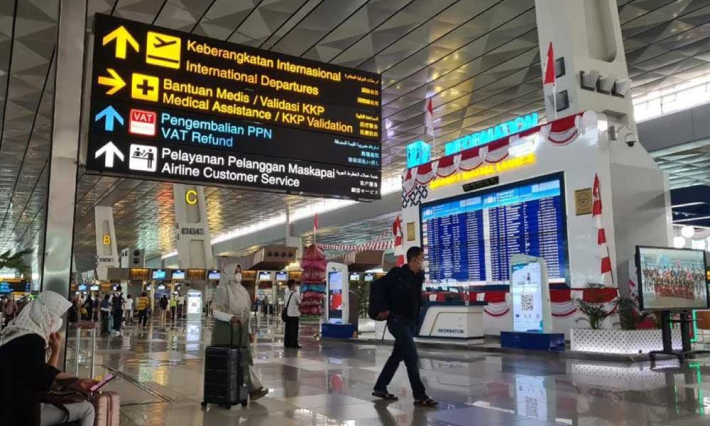
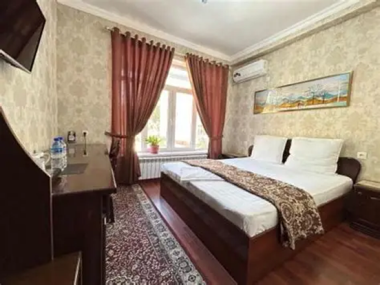
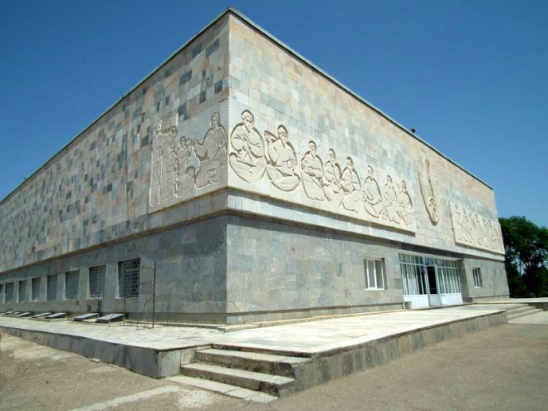
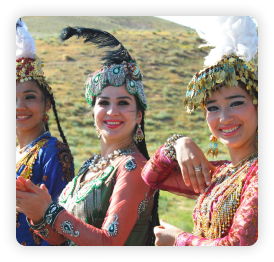
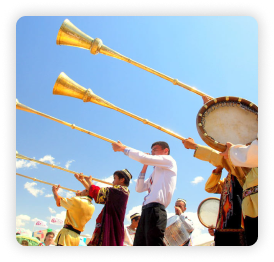

Para pengunjung berkumpul di Bandara Internasional Soekarno-Hatta untuk penerbangan menuju Samarkand, Uzbekistan. (via transit)
Hari 1 : JAKARTA - SAMARKAND
Setibanya di Samarkand, Pengunjung akan ke hotel Karim Park Side Hotel untuk beristirahat dan makan siang. Setelah itu kami memulai city tour dengan mengunjungi Shahi Zinda, kompleks nekropolis yang dikenal sebagai 'Makam Raja yang Hidup' dengan deretan mausoleum berhiaskan ubin biru indah.
Perjalanan dilanjutkan menuju Bibi-Khanym Mosque atau Bibi-Xonim Masjidi, menjadi simbol kemegahan masa pemerintahan Amir Temur.
Setelah itu, Pengunjung akan mengunjungi Registan Square, bangunan yang dikelilingi oleh tiga madrasah megah dengan dekorasi mosaik biru yang sangat detail. Setelah menyelesaikan rangkaian tour hari pertama, Pengunjung akan diantar menuju hotel untuk makan malam dan beristirahat.



Hari 2: SAMARKAND (MENJELAJAHI KOTA)
Setelah sarapan di hotel, perjalanan dimulai dengan mengunjungi Amir Temur Mausoleum atau Gur-i Amir Complex, yang merupakan makam megah dari penakluk besar Amir Temur dengan interior berlapis emas dan batu giok.
Kemudian tour berlanjut menuju museum Ancient Afrasiyab atau Maracanda untuk melihat jejak peradaban kota kuno Samarkand sebelum hancur oleh invasi Mongol. Di sini ada museum tentang sejarah tempat ini dan ada situs arkeologi seperti bukit bukit dibelakangnya.
Setelah dari situs arkeologi, Pengunjung diberikan waktu bebas untuk berjalan-jalan santai di sekitar area pusat kota atau mengunjungi pasar lokal untuk melihat aktivitas masyarakat setempat. Hari ditutup dengan makan malam bersama sebelum kembali ke hotel untuk beristirahat.

Hari 3 : SAMARKAND - BERSANTAI


Setelah sarapan pagi di hotel, perjalanan hari ini dimulai dengan mengunjungi Happy Bird Art Gallery, sebuah galeri seni lokal yang unik di mana Anda dapat melihat berbagai koleksi tekstil tradisional, kerajinan tangan khas Uzbekistan, serta lukisan karya seniman lokal dalam suasana rumah kuno yang artistik.
Perjalanan dilanjutkan menuju Siyob Bazaar, pasar tradisional di Samarkand, untuk merasakan keramaian budaya lokal dan berburu oleh-oleh khas seperti kacang-kacangan, buah kering, manisan, serta kerajinan tangan. Setelah selesai belanja, Pengunjung akan diantar ke hotel dahulu untuk menyimpan barang dan setelah itu memiliki waktu bebas untuk mengeksplorasi area sekitar secara mandiri atau kembali ke hotel untuk menikmati fasilitas yang ada dan siap siap untuk penerbangan pulang esok hari. Malam hari ditutup dengan makan malam bersama.
Hari 4 : SAMARKAND - DEPARTURE
Pengunjung akan melakukan proses check-out dan memastikan seluruh barang bawaan telah siap di koper untuk perjalanan panjang kembali ke tanah air. Perjalanan diakhiri dengan pengantaran menuju Bandara Internasional Samarkand untuk penerbangan kembali ke Jakarta. Tour berakhir dengan kenangan indah dari Samarkand, Uzbekistan.
Tour berakhir dengan pengantaran menuju Bandara Internasional Samarkand untuk penerbangan kembali ke Indonesia atau melanjutkan perjalanan ke destinasi berikutnya